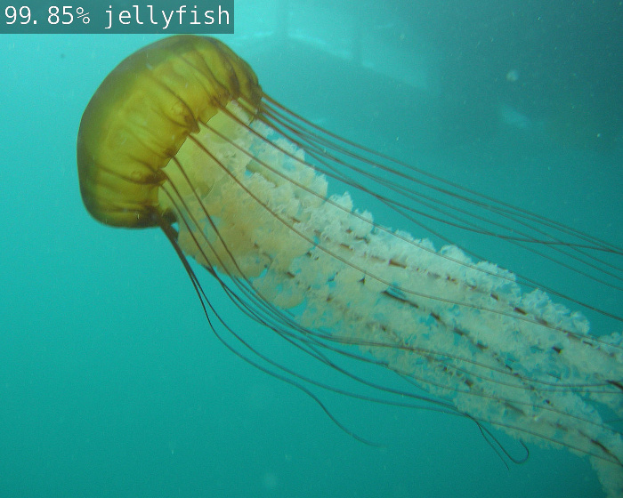

Week1: Introduction & Setup JetsonNano
- Most of this workshop is available in YouTube. Fell free to watch by yourself
Hello AI World
Hello AI World can be run completely onboard your Jetson, including inferencing with TensorRT and transfer learning with PyTorch. The inference portion of Hello AI World - which includes coding your own image classification and object detection applications for Python or C++, and live camera demos - can be run on your Jetson in roughly two hours or less, while transfer learning is best left to leave running overnight.
System Setup (previously done)
Camera Setup
- Instruction about How to connect CSI Camera to the Jetson-Nano can be followed
Assignment 1
Test your camera is running according as the new instructions.
Please send a message to the professor as soon as you finished
- Testing your camera running. Most of the information is extracted from this link
- To check CSI camera, you can run
nvgstcapture-1.0, which will start capture and preview display it on the screen:
- To check CSI camera, you can run
nano@jetson-nano:~/jetson-inference$ more /tmp/test.md
nano@jetson-nano:~$ nvgstcapture-1.0
Encoder null, cannot set bitrate!
Encoder Profile = High
Supported resolutions in case of ARGUS Camera
(2) : 640x480
(3) : 1280x720
(4) : 1920x1080
.....
- Check rotation
- This example command will rotate the image 180 degrees (vertical flip)
nano@jetson-nano:~$ nvgstcapture-1.0 --orientation 2
.....
Take a picture and save to disk
- Connect CSI camera
- Execute in a shell the command nvgstcapture-1.0 --automate --capture-auto
- Open File with eog nvcamtest_XX.jpg
Capture a video and save to disk
- Connect CSI camera
- Execute in a shell the command nvgstcapture-1.0 --mode=2 --automate --capture-auto
- Application will record 10 seconds of video
- Play File recorded with totem nvcamtest_XX.mp4
Homework (Optional)
According to the options available in the nvgstcapture-1.0 functionality, control and adjust the lighting conditions
Please send a message to the professor as soon as you finished
Setup Container
- There are several pre-configured containers to be able to use the Jetson-Nano board
- The most common are related to their use for artificial intelligence and machine learning. The most popular containers hosted on NVIDIA GPU Cloud (NGC) are the following Docker container images for machine learning on Jetson:
- l4t-ml
- l4t-pytorch
- l4t-tensorflow
Running Docker Container
- The pre-built Docker container images for this lab are hosted on DockerHub
- The containers use the l4t-pytorch base container, so support for transfer learning / re-training is already included
Inference instructions
- Follow the github repo instructions to install the docker image in the Jetson-Nano
nano@jetson-nano:~$ git clone --recursive https://github.com/dusty-nv/jetson-inference
Cloning into 'jetson-inference'...
remote: Enumerating objects: 20861, done.
....
Launching the Container
- It's recommended to use the script docker/run.sh script to run the container
docker/run.shwill automatically pull the correct container tag from DockerHub based on your currently-installed version of JetPack-L4T- IMPORTANT: if you are using CSI (Rpi Camera): --volume /tmp/argus_socket:/tmp/argus_socket
nano@jetson-nano:~$ cd jetson-inference/
nano@jetson-nano:~/jetson-inference$ docker/run.sh --volume /tmp/argus_socket:/tmp/argus_socket
reading L4T version from /etc/nv_tegra_release
L4T BSP Version: L4T R32.6.1
[sudo] password for nano:
size of data/networks: 79397 bytes
.....
- For reference, the following paths automatically get mounted from your host device into the container:
- jetson-inference/data (stores the network models, serialized TensorRT engines, and test images)
- jetson-inference/python/training/classification /data (stores classification training datasets)
- jetson-inference/python/training/classification/models (stores classification models trained by PyTorch)
- jetson-inference/python/training/detection/ssd/data (stores detection training datasets)
- jetson-inference/python/training/detection/ssd/models (stores detection models trained by PyTorch)
Running applications
- Once the container is up and running, you can then run example programs from the tutorial like normal inside the container:
root@jetson-nano:/jetson-inference# cd build/aarch64/bin
root@jetson-nano:/jetson-inference/build/aarch64/bin# ./video-viewer
# (press Ctrl+D to exit the container)
Assignment 3
Test your camera is running in the Docker Image through the video-viewer script
Please send a message to the professor as soon as you finished
Inference of Image Classification
root@jetson-nano:/jetson-inference# cd build/aarch64/bin
root@jetson-nano:/jetson-inference/build/aarch64/bin# ./imagenet images/jellyfish.jpg images/test/jellyfish.jpg
- Note that
imagenetapp classifies the image jellyfish.jpg as a jellyfish and store the image solution in the path data/images/test with a confidence of 99.85\%

Assignment 4
Test Image Classification example running in the Docker Image through the imagenet script
Please send a message to the professor as soon as you finished
Inference of Object Detection
root@jetson-nano:/jetson-inference# cd build/aarch64/bin
root@jetson-nano:/jetson-inference/build/aarch64/bin# ./detectnet images/peds_0.jpg images/test/peds_0.jpg
- Note that
detectnetapp detects four persons with a confidence of 70.0\%, 97.6\%, 98.4\% and 86.1\% and store the image solution in path data/images/test

Assignment 5
Test Pedestrian Detection example running in the Docker Image through the detectnet script
Please send a message to the professor as soon as you finished
Using other IA Models
- You can Download other models with the script download-models.sh

nano@jetson-nano:~$ cd jetson-inference/tools
nano@jetson-nano:~/jetson-inference$ ./download-models.sh
Homework (Optional)
You can test other image classification models, object detection, etc. by making use of the download-models.sh script and launching the inference with the option --network
Please send a message to the professor as soon as you finished